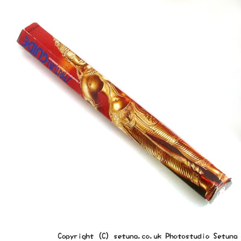

パドミニ社のガイド香といえば有名ですね。
どこのHPを観ても「石けんの様な・・・」と書いてあります。
確かにそのまま焚かずに置いておくとCOWブランドの牛乳石鹸を薄くした様な香りが漂いますね。
よくテイスティングすれば分かると思うのですがミルラ香のきつめの匂いが香りの表層で匂います。
後はグローブ、シナモン、白檀、オピウム等の色々なものが混ざった様な香りの合体版とでも云ったら良いかと思います。
鼻の近くで嗅ぐと結構キッツイです(笑)。
焚き始めると少しウッディ系とフラワー系の混ざった様なさっぱり系の香りがします。
ミルラの香りは奥底の方で感じる程度に落ち着きます。
焚き終わりはミルラの香りが漂い、他の香りと共にフッと消し去る・・・そんな感じで消えてゆきます。
